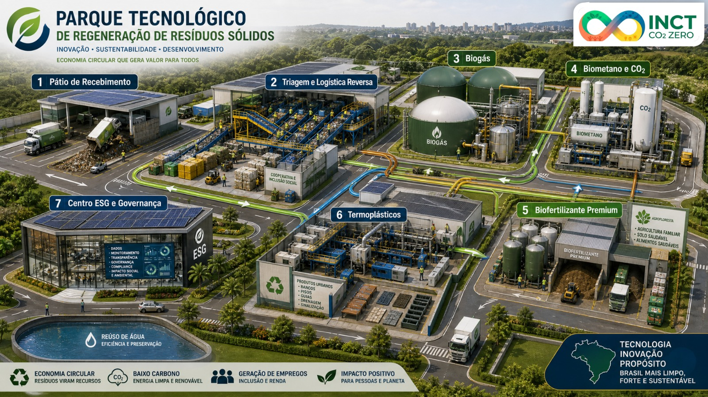
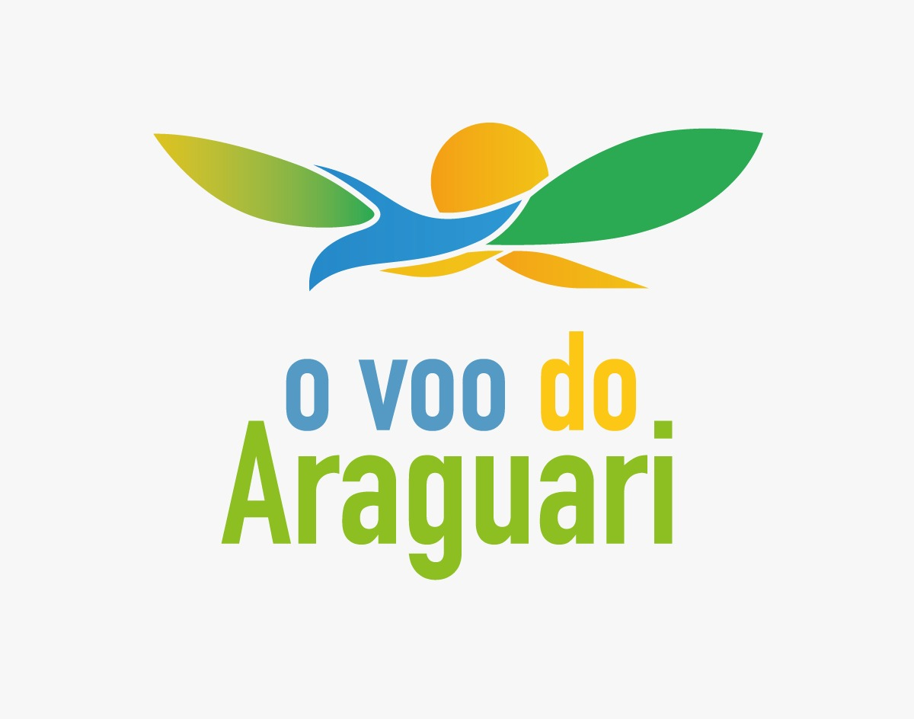
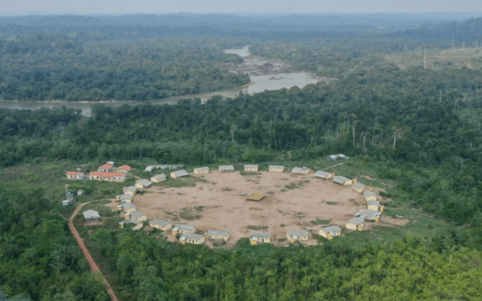
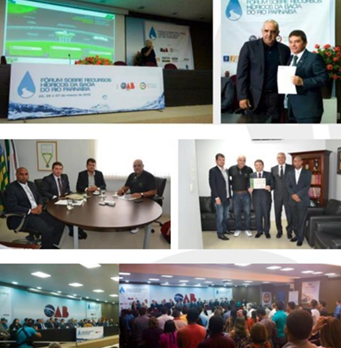
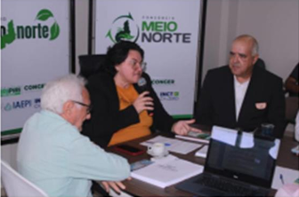

01
Meio Ambiente
Gestão de emissões, recursos naturais, resíduos sólidos, mudanças climáticas e propostas voltadas à proteção ambiental e à economia de baixo carbono.
O INCT CO₂ Zero desenvolve e articula projetos que integram pesquisa, tecnologia, inovação e compromisso socioambiental, buscando soluções para desafios concretos da sociedade.
Conheça nossa atuação ↓
O desenvolvimento de projetos é uma das formas pelas quais o INCT CO₂ Zero coloca sua missão institucional em prática. A instituição reúne conhecimentos científicos, capacidades técnicas e articulação com diferentes setores para propor respostas aos desafios ambientais, sociais e tecnológicos.
Sua atuação contempla iniciativas relacionadas às mudanças climáticas, à gestão de gases de efeito estufa, aos resíduos sólidos, à inovação, ao fortalecimento de comunidades e ao desenvolvimento sustentável.
Em colaboração com organizações públicas e privadas, associações e comunidades tradicionais, o instituto busca estruturar projetos que conciliem responsabilidade socioambiental, viabilidade técnica e oportunidades de desenvolvimento.
Os projetos do instituto relacionam diferentes conhecimentos e práticas, considerando a sustentabilidade em suas dimensões ambiental, social e tecnológica.
Gestão de emissões, recursos naturais, resíduos sólidos, mudanças climáticas e propostas voltadas à proteção ambiental e à economia de baixo carbono.
Desenvolvimento comunitário, fortalecimento institucional, valorização de saberes tradicionais e construção de alternativas de inclusão e geração de renda.
Pesquisa aplicada, tecnologias ambientais, inovação em processos, aproveitamento de recursos e desenvolvimento de soluções para a sustentabilidade.
A atuação descrita no portfólio institucional envolve atividades como diagnóstico, planejamento, cooperação técnica e mobilização de diferentes atores. Cada projeto possui necessidades e etapas próprias.
Identificar necessidades, desafios e oportunidades por meio de estudos e diagnósticos.
Desenvolver planos de ação, soluções técnicas e estratégias adequadas a cada realidade.
Buscar colaboração entre instituições, parceiros e comunidades envolvidas.
Contribuir tecnicamente com as atividades previstas e com o aperfeiçoamento das iniciativas.
Conheça algumas das iniciativas desenvolvidas e articuladas pelo INCT CO₂ Zero.

Desenvolvimento socioambiental de comunidades ribeirinhas.

Fortalecimento institucional e desenvolvimento sustentável indígena.

Cooperação em recursos hídricos, sustentabilidade e gestão ambiental.

Propostas de economia circular e tecnologias ambientais.